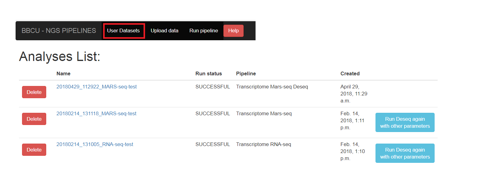
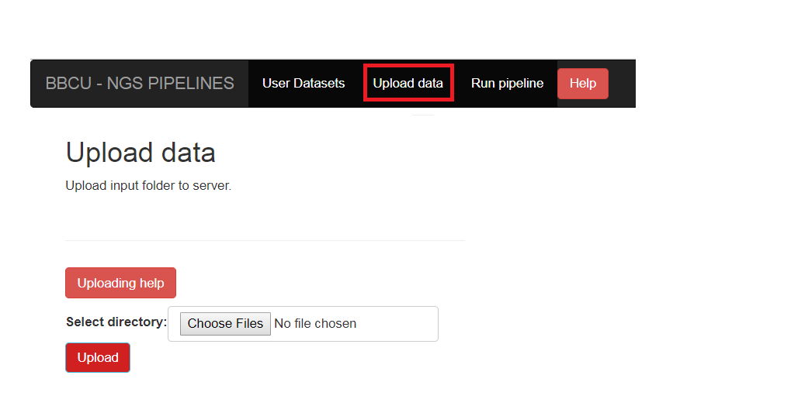
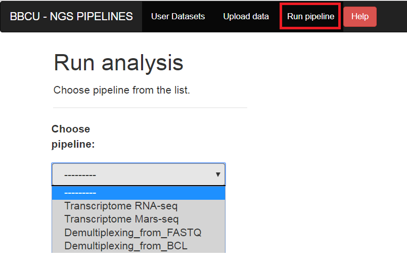

User guide¶
User datasets¶
The "User datasets" screen contains the list of the user's analyses. You can see the status of the run (RUNNING/SUCCESSFOL/FAILS). You need to refresh the page to see if the status has changed (you also will get email in the end of the run).
Import Input data¶
In order to run the transcriptome analysis pipeline, fastq sequence files need to be located on the server.
Click on the "Upload data" button on the navigation bar, and select the folder of fastq files.
Run analysis¶
After importing you data (or if you have old data on the server that was imported in the past), you can run the pipeline by selecting the "Run pipeline" option
